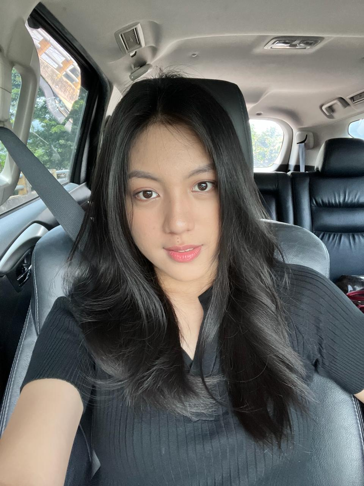

Perkenalkan nama saya Agatha Pearly Sumanti dari jurusan Teknik Elektro program studi Informatika. Website ini saya buat untuk memenuhi tugas mata kuliah Pemrograman Web. Jika anda tertarik tentang kopi, sunset atau kuliner Kota Bitung, bisa simak terus website saya ini yaa. Selamat menikmati!
